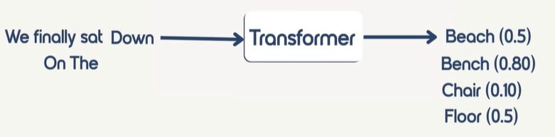

LLM (Large Language Model) is a type of advanced Artificial Intelligence model designed to:
Understand human language
Process text
Generate human-like responses
These models are trained on massive amounts of text data (books, websites, articles, and code) and learn language patterns such as grammar, meaning, and context.
Simple definition:
An LLM is a model that can read, understand, and generate human-like text.
Massive Scale:
Contain billions of parameters.
These parameters store learned patterns in language.
General-Purpose Capability:
LLMs can perform many tasks:
Answer questions
Summarize text
Translate languages
Write code
Generate content
Context Understanding:
Can understand relationships between words.
Works well even for long text inputs.
GPT-4 (OpenAI)
Claude (Anthropic)
Gemini (Google DeepMind)
Llama (Meta)
GPT = Generative Pre-trained Transformer
Generative: Can generate new content from user input.
Pre-trained: Trained beforehand on large text corpora.
Transformer: Uses the transformer neural network architecture to model word relationships. It generates data based on pre-trained data.
The transformer architecture was introduced in the 2017 research paper "Attention Is All You Need" and uses a self-attention mechanism.
Self-attention is the core mechanism inside transformer models (like GPT, Claude, Gemini) that lets each word in a sentence "look at" every other word and decide which one are the most relevant. It computes relationships between tokens in parallel, enabling LLMs to capture both nearby and long-range context efficiently.
Example:
Sentence: "The bank by the river is wide."
The word "bank" could mean financial bank or riverbank.
Self-attention lets "bank" look at river" and realize the meaning is geographical, not financial.
I want to open account in SBI bank. :) Hope you understood
When GPT reads a sentence, it does not give equal importance to all words. It carefully decides which words are important and which words are less important, is there any relationship between the words etc. This thinking process is called attention.
Below steps are the core workflow of a Transformer-based Large Language Model (LLM) such as GPT.
LLMs generate text by predicting the next token repeatedly, one step at a time, based on the input and prior generated tokens.
Transformer / LLM Processing Steps
1. Input Sentence: The model receives a sentence.
Example:
"I deposited money in the bank."
2. Tokenization: The sentence is broken into smaller units called tokens (words, subwords, or characters).
Example:
["I", "deposited", "money", "in", "the", "bank"]
3. Input embedding: Each token is converted into a numeric vector (a list of numbers) so the neural network can process it.
Example:
"I" → [0.12, -0.45, ...]
"money" → [0.67, 0.21, ...]
"bank" → [0.91, -0.34, ...]
4. Positional encoding: Adds word-order information.
Example:
Token |
Position |
I |
1 |
deposited |
2 |
money |
3 |
bank |
6 |
Now the model knows the difference between:
Dog bites man, and
Man bites dog
5. Self-Attention (Finding Relationships): Connects important words and assigns attention scores, even when they are far apart.
Example:
"I deposited money in the bank."
The word bank strongly attends to money and deposited, so the model understands:
bank = financial institution
Instead of:
bank = river bank
6. Feed-Forward Neural Layers: After attention identifies relationships, feed-forward layers refine and transform the representations, extracting higher-level patterns and meanings.
7. Next-Token Prediction (Decoding): Using all the processed information, the model predicts the most likely next token and repeats until completion.
Example: next-token prediction flow
Input: "We finally sat"
Model predicts: "down"
New input: "We finally sat down"
Model predicts: "on"
New input: "We finally sat down on the"
Possible predictions with different probabilities: bench, beach, chair, floor.
The model selects one token (based on decoding settings) and continues.

This is the entire working of our LLM. All the LLMs work in the same way.
Google Gemini is also a pre-trained Transformer.
Gemini, Claude, ChatGPT are all GPT.
What is LLM? describes the model category and capabilities.
How LLM works? describes the transformer-based token prediction process.
So your understanding was correct, you just mixed architecture details into the definition section. In this page, they are now separated clearly.